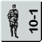
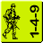
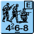
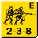

1.1
There are two kinds of Personnel counters with several varieties of each. The values of each unit will vary from one nationality to another and are listed on the National Capabilities Chart (A25).
There are two kinds of Personnel counters with several varieties of each. The values of each unit will vary from one nationality to another and are listed on the National Capabilities Chart (A25).
SMC are elite [EXC: Partisans] units which bear a single silhouette and represent just one man. There are two types of SMC: leader and hero. Each is described in detail later.
 MMC are units which bear the silhouette of more than one man and represent a number of men who perform as a group. There are three types of MMC: squad, HS, and crew. A vehicle's inherent crew is not a MMC until it leaves the vehicle and takes the form of a counter.
A squad counter bears the silhouette of three men, and for game purposes represents approximately ten men, although historically the squad might range in size from seven to 15 men (depending upon nationality, date, and circumstances). Each nationality has at least three types of squads [EXC: Partisans] defined as either Elite, First Line, Second Line, Green, or Conscript.
A HS counter bears the silhouette of two men and represents roughly five men who perform as a group. A HS comes into play when a squad is Reduced or Deploys into two HS. A broken HS has a printed Morale Level one < that assigned to a broken squad of the same Class and nationality [EXC: Japanese elite and 1st line HS have the same broken Morale Level as a squad].
A crew counter bears the silhouette of two kneeling men and represents roughly five men with special training who perform as a group to operate special weapon counters. A crew also represents picked men who are the best of their company regardless of their Morale Level as evidenced by their Self-Rally capability (A10.63). As such, Infantry crew counters are always considered elite troops with a printed Morale Level equal to that of their nationality's Good Order elite squads as well as FP and Range factors of two. This Strength Factor serves to differentiate Infantry crew counters from dismounted vehicular (and thus non-elite) crew counters (D5.1).
Each MMC and hear counter contains a three-digit hyphenated number called its Strength Factor which quantifies its capabilities in the game.
The leftmost number of the Strength Factor represents the FP it can attack with in combat prior to any modification. The numerical exponent listed after the FP number on some squad types is the Smoke Placement Exponent (A24.1). If the FP number is underlined, the unit may use the Assault FP bonus (A7.36) during its AFPh. Leaders, although Armed, have no inherent FP.
The middle number of the Strength Factor is the number of hexes away from the hex occupied by that unit which it can reach with its FP under normal conditions (hereafter referred to as Normal Range).2 The range to a target is always the least number of hexes from the firing hex to the target hex (inclusive of only the latter), regardless of the actual number of hexes crossed by the LOS. If the Range number is underlined, the unit may use the Spraying Fire Option (A7.34). Leaders have no Normal Range.
2 Range is far more than simply a measure of the distance a unit's weapons can shoot. It is also an abstracted measure of the unit's discipline, fire doctrine, training, and willingness to engage an enemy. The player who assumes that his units will fire at any enemy they can see is giving them the benefit of far more heroic and aggressive tendencies than they usually possessed. Fire draws fire in return, and more units sought to duck a fight than to seek one.